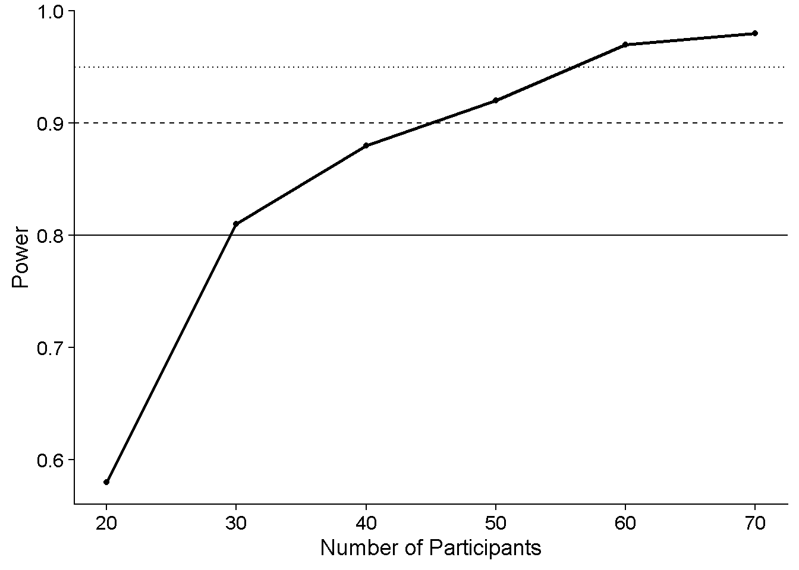

I recently wondered if it would make sense to use some kind of bootstrapping to conduct power analyses when you already have a good chunk of pilot data available. That was motivated by this project I am working on where we collected data from 12 participants (mainly to have something to present at VSS this year …). That’s already a good number, but the task is pretty hard and the data is quite variable, so my intuition is that we’ll need about 50 participants overall. Now, for some other power analysis project, I am using full-on simulations. But its a lot of work to simulate full data sets, and I am wondering if we could some kind of bootstrapping to estimate power based on the pilot data. Now there would of course be some heavy assumptioning going on – specifically that the pilot participants are representative of the population. But keeping that in mind, it could give us an idea, maybe. So in this blog post I just want to quickly see what happens when I actually execute this idea.
The basic idea is that I randomly choose 30, 40, 50, 60 or 70 participants out of my 11 pilot participants (with putting back as you will have guessed) and then perform the analysis over these 30, 40, 50, 60 or 70 participants. I do that 100 or 1000 times and the fraction of times where the analysis comes out significant (pick your own alpha poison, I’ll just go with 0.05) is the power.
In a different script, I have analyzed the pilot data from this project. You can see a little poster here on Twitter just to get a general idea of what’s going on. I had to exclude a lot of participants/trials, so I want to only “bootstrap” over the one actually included in the analysis.
FinalData = Data %>%
filter(!(nGoodPursuitPerCondition < 10 & Fixation == "Pursuit" &
Environment == "Environment_Local_Info") &
!(nGoodFixationPerCondition < 10 & Fixation == "Fixation" &
Environment == "Environment_Local_Info")) %>%
filter(Good == 1) %>% #only good trials
filter(ID %in% GoodIDs)Now we follow the procedure outline above. Pick participants, run analysis, rinse and repeat 500 times.
# Power_DF_Bootstrap = data.frame()
# k = 0
#
# for (nParticipants in c(20,30,40,50,60,70)){
#
# for (k in 1:100){
# SampledIDs = sample(GoodIDs,nParticipants,replace = TRUE)
# BootstrappedData = data.frame()
#
# j = 0
# for (i in SampledIDs){
# j = j+1
# DF_ID_Replaced = FinalData %>% filter(ID == i)
# DF_ID_Replaced$ID = paste0("p",j)
# BootstrappedData = rbind(BootstrappedData, DF_ID_Replaced)
# }
#
# Fits_Bootstrap = (quickpsy::quickpsy(BootstrappedData, #only good participants
# x = velH_Pest,
# k = Pest_Faster,
# grouping = .(Environment ,Fixation,velH,ID),
# bootstrap = "none"))$parini
# Fits_Bootstrap = cbind(Fits_Bootstrap %>%
# filter(paran == "p1"),(Fits_Bootstrap %>%
# filter(paran == "p2"))$par)
# colnames(Fits_Bootstrap) = c(colnames(Fits_Bootstrap)[1:5],"PSE","SD")
#
# LMM = lmer(PSE/velH ~ Environment * Fixation + (velH| ID),
# data = Fits_Bootstrap %>% filter(SD > 0 & PSE > 0 & PSE < 3 * velH))
#
# Power_DF_Bootstrap = rbind(Power_DF_Bootstrap,
# data.frame(nParticipants = nParticipants, iteration = k, pvalue = summary(LMM)$coefficients["EnvironmentNo_Environment:FixationPursuit","Pr(>|t|)"]))
# print(paste0("Participants:", nParticipants))
#
# save(Power_DF_Bootstrap, file = paste0(dirname(rstudioapi::getSourceEditorContext()$path), "/SavedVariables/Power_DF_Bootstrap.RData"))
# }
# }
load("Power_DF_Bootstrap.RData")Get the fraction of p < 0.05:
alpha = 0.05
Power_DF_Bootstrap = Power_DF_Bootstrap %>% group_by(nParticipants) %>%
mutate(Power = mean(pvalue < alpha))Aaaaaaaaaaaaaaaaaaaand plot the power for each number of participants. The horizontal lines are power levels of 0.8, 0.9, and 0.95, respectively.
ggplot(Power_DF_Bootstrap, aes(nParticipants,Power)) +
geom_line(linewidth = 1) +
geom_point() +
xlab("Number of Participants") +
ylab("Power") +
geom_hline(yintercept = 0.8, linetype=1) +
geom_hline(yintercept = 0.9, linetype=2) +
geom_hline(yintercept = 0.95, linetype=3)
These power estimates seem sensible and they somewhat match those that I obtained using (fully) simulated data.
Looks good in that you can get a result. If you’re confident that your pilot data is more or less representative of the population then this is a relatively quick and easy way to estimate how many participants you need to test to reach a certain alpha cutoff. BUT you can’t really be confident that your 10 pilot participants are representative enough of your population. If that was a good assumption you wouldn’t even need to test more people.
A better use case is, in my opinion, using this method as a sanity check for more intricate power analysis. Power analyses that simulate either the data generating process in its entirety, or at least simulate data sets that look very much like data sets you would expect from real participants (as I have described for psychophysical 2AFC designs), are overall more appropriate because they allow you to set a whole bunch of parameters relating to biases and variability on different levels (e.g., participant level vs group level). However, given all these moving parts, they’re also not easy to set up and may yield power estimates that are way off base if, e.g., variability is over- or underestimated, or let’s face it, there’s some bug in the code. In my preprint I recommend using parameter estimates from pilot data, so comparing their results to a power estimate that is directly derived from the pilot data can be helpful to determine whether your simulated data is as similar as desired to the pilot data.